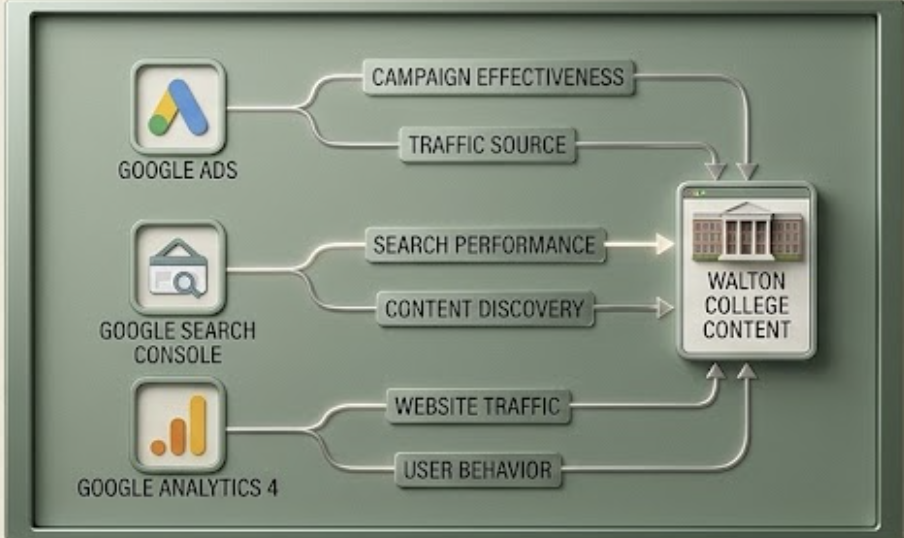

01
Data & Analytics
Using Google Analytics, Google Search Console, and Google Ads Manager to understand website traffic, search performance, user behavior, and how people discover Walton College content.